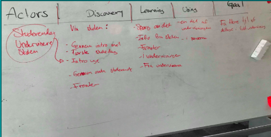

I dette forløb skulle vi lære samspillet mellem bruger og brugergrænseflader. Samt hvilke teorier,metoder,redskaber man kan bruge til test af produktion til digitale løsninger til smartphones. I den første uge udførte vi et designsprint sammen, i ugerne efterfølgende skulle vi selv udføre designsprintet først individuelt og derefter i grupper.
Dette var vores sidste opgave i forløbet grundlæggende UX, ud fra de metoder og viden som vi havde fået i de forlæggende uger, skulle vi designe en prototype, som skulle hjælpe de studerende på Kea.Vi brugte programmet XD til at designe vores prototype i. I min gruppe sotd jeg for den visuelle stil, at farverne passede sammen, samtidtig hjalp jeg med opbygningen af skærmene.
Den første del i design-sprint er at finde et long term goal. Dette gjorde vi i fællesskab og vi kom frem til dette long-term goal og sprint-questions.
Vi finder udfordringerne i vores long term goal og sprint-questions ud fra et map
Vi skitsere vores ideer ud fra forskellige sketch øvelser
Visuel stil: Cartoon-ish, flat-design, stick man, happy colors
Farver: Glade stærke farver der tiltaler målgruppen Farverne spænder over kulde/varme-kontrasten og indeholder komplementær farver. Paletten indeholder de seriøse kolde farver, gule/grønne positive farver og de røde som opfordre til aktivitet
Efter at have testet app’en fik vi også feedback på designet, og har derefter lavet nogle ting om og fået det tilpasset. Vi startede med at rette i farverne så der ikke var flere nuancer gul og rød fx, og de mørkeblå knapper blev lavet mere i tone med baggrunden og nogle af de andre elementer. Så i sidste ende blev farverne meget mere harmoniske og gav en mere rolig udtryk uden at fjerne det legesyge og spil-agtige udtryk. Derudover har vi flyttet rundt på elementerne i menuen, så de knapper der var vigtigst kom længere op, og vi har også ændret på funktionerne på de knapper der blev flyttet ned i bunden. Farven på overskrifterne er alle blevet hvide, i stedet for at have forskellige farver for at give mere sammenhæng. Derudover er det blevet til at der kun er en menu knap i venstre hjørne, og ikke længere nogen settings knap. Alt sproget er blevet ensartet og holdt i engelsk, da KEA også har en del internationale elever. Der er blevet rettet til i størrelsesforholdene så bokse og tekster passer bedre sammen.
Hej og velkommen til vores test. Vi starter med nogle indledende spørgsmål, og så derefter en tænke-højt test hvor du meget gerne må sige hvad du gør, og hvorfor mens du klikker rundt i prototypen.
Vi har valgt at lave en app/et spil som tager udgangspunkt i flere af de studerendes problem, med mangel på motivation. Vi har lavet det som et battle spil hvor du kan teste din viden, spille mod andre elever og udvikle din avatar. På den måde håber vi på at det kan holde de studerende til undervisningen så de kan bruge det de lærer, til at konkurrerer med hinanden.
Find battle funktion → Spil multiplayer → Svar på spørgsmål → Gå til avatar/shop → Klik tilbage til menu